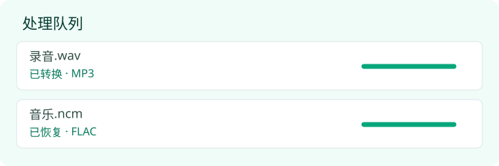

转MP3 · 使用说明
音频转换使用说明：选择、处理、试听与下载
选择文件 → 等待处理 → 试听并下载。全程不需要注册。
第一步：选中本地音频
打开转换工具，点击“选择文件”，或把文件拖到绿色区域。每个文件不超过 100 MB；普通音频转码最长支持 20 分钟。不要仅通过改后缀来转换格式。
第二步：等待队列处理

普通音频由浏览器解码并转为 192 kbps MP3，已有 MP3 原样保留。NCM/QMC 等受支持的特殊格式尝试恢复原音频，输出不一定是 MP3。请保持网页打开；文件多时分批处理，避免内存不足。
第三步：试听并保存
处理成功后可先试听，再点击该文件旁的“下载”。有多个结果时点击“打包下载”获得 ZIP；中文版名称为“御用音乐包”。打包大小超过 150 MB 时请逐个下载或分批处理。下载后若显示自愿支持弹窗，点击“朕已阅”即可关闭，不影响下载。
三个常见使用场景
OGG 文件想在老播放器里播放
选择 OGG，等待显示“已转换 · MP3”，下载后在目标播放器试听。能否解码取决于浏览器；换较新的浏览器可能改善兼容性。MP3 有损编码不提升音质。
FLAC 文件想换成更方便携带的 MP3
保留 FLAC 原件，再用本工具生成 MP3 作为日常播放副本。不要删除原件后指望从 MP3 完整还原无损音频，详见音质说明。
NCM/QMC 文件无法直接播放
选择你有权处理的文件，看是否能恢复。成功后按实际后缀选择播放器；若输出 FLAC，它仍是 FLAC。提示需要额外密钥或暂不支持时，本工具不会要求你提交账号或获取密钥，详见格式说明。
处理失败时
- 检查大小和时长，尝试单个文件，关闭其他占用内存的页面。
- 使用新版浏览器；WMA、APE、AIFF、DFF 等格式可能无法解码。
- 特殊格式可能版本不兼容、需要额外密钥或已损坏，重命名后缀不能修复。
- 结果不能在某个播放器播放时，先核对真实后缀和播放器支持的编码。
仍有问题？请按联系页面提供错误提示与浏览器信息，无需发送歌曲内容。